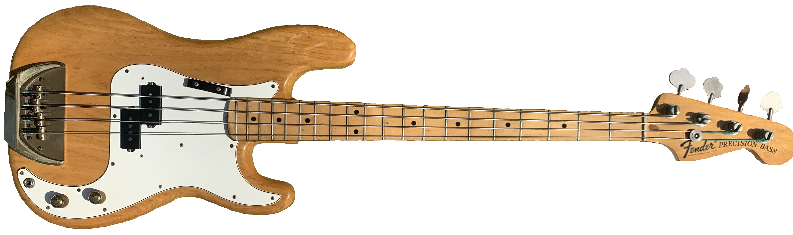

Ian's Instruments
Bass Guitar
This base guitar has been in the family for decades. It was first played by my mother when she was young. This guitar was another gift that Ian recieved and has been putting to good use since.
Below is a demo of what Ian can do with this guitar. Give it a shot and let us know how it goes!
To play the instrument, click on the strings where you would like to play a note or view the keyboard controls below. The notes are split into 3 frets of each string at the open, 7th, and 12th fret. Give it a try by clicking the 'S' key to play the A string at the 7th fret.
| Controls | ||||
|---|---|---|---|---|
| Note | E | A | D | G |
| Keyboard Input | Q | W | E | R |
| A | S | D | F | |
| Z | X | C | V | |
